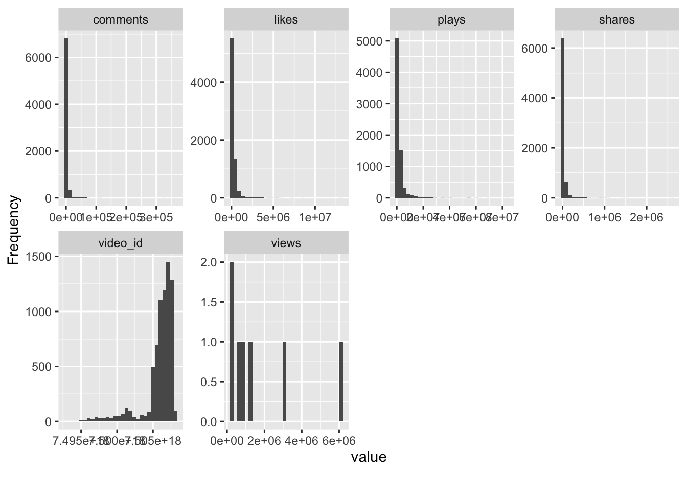
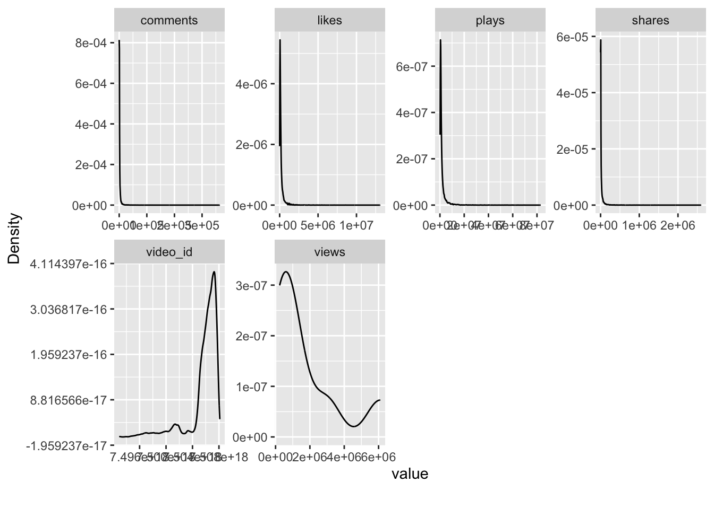
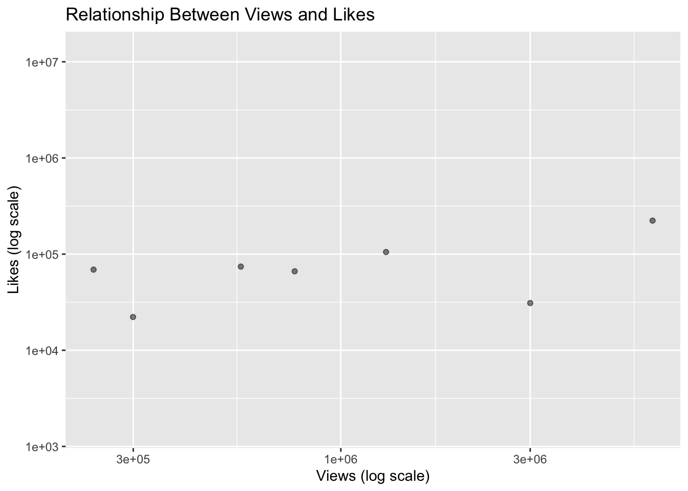
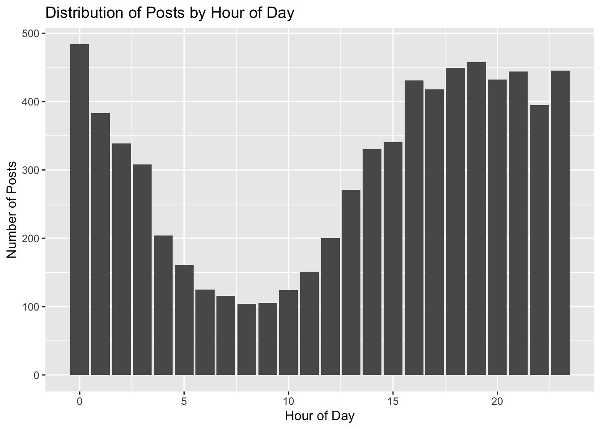

Raouda Mamane BelLo boubacar
Exploratory Data Analysis (EDA)
This EDA is based on the TikTok 2025 Dataset stored in our project directory.
Here, I explore the structure of the data, missingness patterns, distributions, and early relationships between engagement metrics like views, likes, comments, and shares.
1. Loading the Dataset
For my EDA, I am using the TikTok 2025 Dataset, which is located in our project folder.
To get a quick sense of the structure:
Rows: 7,225
Columns: 14
$ video_id <dbl> 7.506184e+18, 7.507317e+18, 7.507286e+18, 7.506662e+18, 7.…
$ author <chr> "dalebrisby90", "jessicafloriolli", "ay_2fya", "abell1823"…
$ description <chr> "That sounds like JB, ima go with TRUTH! 🤔🤣 #rodeotime #da…
$ likes <dbl> 44800, 285700, 38000, 87200, 77600, 30200, 782100, 38900, …
$ comments <dbl> 125, 290, 65, 259, 724, 32, 1267, 196, 333, 669, 3526, 161…
$ shares <dbl> 1863, 963, 496, 23600, 1196, 1096, 88300, 3441, 1187, 1059…
$ plays <dbl> 686000, 1200000, 416100, 725800, 362100, 303200, 5100000, …
$ hashtags <chr> "rodeotime, dalebrisby, jbmauney", NA, "publicinterview, f…
$ music <chr> "original sound", "ECE Marketing Airball", "original sound…
$ create_time <dttm> 2025-05-19 15:45:53, 2025-05-22 17:02:36, 2025-05-22 15:0…
$ video_url <chr> "https://www.tiktok.com/@dalebrisby90/video/75061835006603…
$ fetch_time <dttm> NA, NA, NA, NA, NA, NA, NA, NA, 2025-05-25 11:38:31, 2025…
$ views <dbl> NA, NA, NA, NA, NA, NA, NA, NA, 238300, 3000000, 6100000, …
$ posted_time <dttm> NA, NA, NA, NA, NA, NA, NA, NA, 2025-05-21 02:09:20, 2025…My first impression is that the dataset is fairly large and contains a mix of numeric and character variables. Seeing everything summarized like this helped me understand how the data is organized and what I will need to clean later. The dataset includes numeric engagement metrics (likes, comments, shares, plays, views) and text-based variables (description, hashtags, music, author). It also contains time variables such as create_time and posted_time, which will help explore temporal trends.
2. Missing Data
I started by checking where the dataset has missing values.
Reflection: The missing data visualization made it clear which variables might cause problems later. Some engagement columns (Some variables like fetch_time, posted_time have missing values) have gaps, which is not surprising since not every video might have all metrics available. Engagement metrics look mostly complete, which is good for modeling. Understanding what is missing early helps avoid problems later in the project.
- Exploring Numeric Variables I wanted to understand how the numeric variables behave, especially engagement metrics.


video_id likes comments shares
Min. :7.493e+18 Min. : 1514 Min. : 0 Min. : 13
1st Qu.:7.506e+18 1st Qu.: 52500 1st Qu.: 262 1st Qu.: 1148
Median :7.507e+18 Median : 104600 Median : 642 Median : 4844
Mean :7.506e+18 Mean : 208361 Mean : 1980 Mean : 22838
3rd Qu.:7.507e+18 3rd Qu.: 216000 3rd Qu.: 1645 3rd Qu.: 17700
Max. :7.508e+18 Max. :13100000 Max. :364300 Max. :2600000
plays views
Min. : 140800 Min. : 238300
1st Qu.: 506900 1st Qu.: 429750
Median : 896050 Median : 765200
Mean : 1909210 Mean :1751857
3rd Qu.: 1800000 3rd Qu.:2150000
Max. :83100000 Max. :6100000
NA's :7 NA's :7218 Reflection: Almost all engagement metrics (especially views, plays, likes) are extremely right-skewed. This is typical for platforms like TikTok, where only a small number of videos go viral. It means log-transformations might be helpful later.
- Exploring Categorical Variables
Code
$author
.x
espn streamerclipperrr barstoolsports bleacherreport
16 15 14 12
houseofhighlights justjazzzyidk smehmemik camfant
11 10 10 9
theclipstudiox leorealtoks
9 7
$description
.x
#fyp
26
#юмор #прикол #круги
10
#LIVEIncentiveProgram #LIVEInteraction #PaidPartnership
5
#tiktok #foryou
5
follow me on here and insta! #lanializa #fyp #foryoupage
5
#tiktok #fouryou #movie #fyp
4
Тгк: akamest1 #rge #глобальныерекомендации #реки
4
#foryou
3
#fyp #foryou
3
#fyp #foryoupage
3
$hashtags
.x
fyp fyp, viral
100 10
юмор, прикол, круги foryou
10 8
fypシ fyp, foryou
8 7
streameruniversity foryoupage
6 5
foryoupage, fyp lanializa, fyp, foryoupage
5 5
$music
.x
original sound
3484
sonido original
366
оригинальный звук
350
ECE Marketing Airball
107
som original
84
son original
42
Originalton
39
New Flame (but I promise you) (feat. Usher & Rick Ross)
31
Bunna Summa
26
Original Sound
24
$video_url
.x
https://www.tiktok.com/@___luismiiguel5/video/7507344712253099295
1
https://www.tiktok.com/@__alejandraa14/video/7505947188875382047
1
https://www.tiktok.com/@__destinyalexis/video/7506218768029256982
1
https://www.tiktok.com/@__itsnallely/video/7506542266966625567
1
https://www.tiktok.com/@__luissanchez_8/video/7505168326239243538
1
https://www.tiktok.com/@__nmxo21/video/7505247560081362222
1
https://www.tiktok.com/@__sema04/video/7507248826256870678
1
https://www.tiktok.com/@__vika.____/video/7501655719112936709
1
https://www.tiktok.com/@_.lizethhhh/video/7505195552527633710
1
https://www.tiktok.com/@_.zheeee._/video/7507747477576076586
1 Reflection: Looking at the top categories helped me see which creators or hashtags appear the most. A few authors seem very active, which might influence trends in the dataset. This gave me a better idea of how concentrated the dataset is around certain users.
- Correlations Between Variables
Reflection: Engagement variables (views, likes, shares, comments) seem highly correlated. This makes sense because videos that get a lot of views tend to get attention in other metrics. It also made me think about whether we need all of them later, or if some are redundant.
- Correlations Between Numeric Variables Writing

Reflection: The strongest correlations appear between views, plays, likes, and shares, which makes sense: videos with high view counts often get high engagement in other categories.
- Relationships Between Key Metrics Here I looked at how views relate to likes, since this is usually the clearest pattern in social media engagement. (Replace variable names once you confirm the dataset’s actual column names.)
Code

Reflection: Plotting on a log scale made the pattern much clearer. There is a strong positive relationship, but the spread is pretty wide. This suggests that some videos get a lot of attention but not necessarily a proportionate number of likes. It made me think about the role of content type or timing, which might explain these differences.
- Time-Based Patterns (If Time Column Exists) If the dataset contains a posting timestamp such as create_time or posted_at, this code will work:
Code

Reflection: Time-of-day patterns can be useful because engagement often depends on when the content is posted. Even if the plot is uneven, it’s useful for forming early hypotheses about user behavior.
- Main Takeaways From My EDA Here are the key things I learned:
- Engagement variables (views, plays, likes) are heavily skewed, with many low-engagement videos and a few very viral ones
- Several creators appear often, meaning activity is not evenly distributed
- Missingness mainly affects time-related fields like fetch_time and posted_time
- Engagement metrics are strongly correlated with each other
- Posting time varies widely, which may influence engagement trends
The relationship between views and likes is strong but not perfect, suggesting other factors matter.